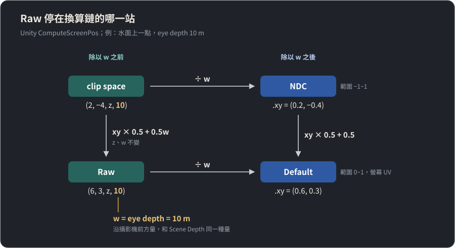

<!doctype html>
<html lang="zh-Hant">
<head>
<meta charset="utf-8">
<meta name="viewport" content="width=device-width, initial-scale=1">
<title>Depth Coloring</title>
<script src="../_explainer/explainer.js"></script>
</head>
<body>
<script type="text/markdown" id="ex-content">
## 這一章要解決的問題

### 水面是一整片不透明的藍

做完 [Gerstner Waves](gerstner-waves.html)，湖面會起伏，但它是一整片不透明的藍：看不到湖底和魚，岸邊和湖心一樣藍，水碰到岸和石頭的地方只是一條硬邊。這一章讓水看得出深淺，對應 Final Demo 的兩條：

> 近岸淺水偏透明、能看到水底，越深越暗、越偏藍綠色
>
> 岸邊與物體接觸處有白色泡沫

做完後，岸邊的水清澈見底，越往湖心越暗、越偏藍綠；水裡的魚越深越看不清；岸邊和半泡的石頭周圍有一圈邊緣不規則、緩慢飄動的白色泡沫。顏色、清澈度、泡沫的參數和波浪一樣放在設定資產 `SO_LakeWater` 裡；graph 裡的 node 收成三個 Sub Graph。

### 這一章怎麼走

每一步都先在 Unity 裡做出來，看到哪裡不對，再講下一段原理去修它：

| 步驟 | 做什麼 | 做完會看到的問題 |
| --- | --- | --- |
| [第一步](#第一步：把水改成-transparent) | 把水改成 transparent | 到處一樣透明，湖心和岸邊沒有差別 |
| [第二步](#第二步：這個像素底下的水有多厚) | 算出每個像素底下的水有多厚，先畫成黑白 | 只有黑白的厚度圖，還不是水的顏色 |
| [第三步](#第三步：依厚度決定透明度與顏色) | 依厚度決定透明度與顏色 | 水碰到岸和石頭的地方沒有泡沫 |
| [第四步](#第四步：岸邊與石頭周圍的泡沫) | 在水薄的地方加上泡沫，用 noise 貼圖打散邊緣 | 新參數放在 Material 上，波浪放在設定資產上 |
| [第五步](#第五步：把新參數搬進設定資產) | 把新參數搬進設定資產 | 這一章的 node 攤滿主 graph |
| [第六步](#第六步：把這一章的-node-收成-Sub-Graph) | 把這一章的 node 收成三個 Sub Graph | |

[第一步](#第一步：把水改成-transparent)到[第五步](#第五步：把新參數搬進設定資產)之後都有「現在應該看到」、一張預期與常見錯誤並排的示意圖，和一張「看到什麼、通常是哪裡錯」的對照表。示意圖都是從正上方看湖，用顏色的濃淡表示水有多不透明。

## 第一步：把水改成 transparent

### 改 Graph Settings

打開 `Assets/Water/Shaders/SG_Water.shadergraph`，在 Graph Inspector 的 Graph Settings 改這幾項：

| 設定 | 改成 | 為什麼 |
| --- | --- | --- |
| Surface Type | **Transparent** | 讓水和後面已經畫好的湖底混色 |
| Blending Mode | **Alpha** (改成 Transparent 後才出現，預設就是 Alpha) | 用 Alpha 決定水色佔多少 |
| Cast Shadows | **取消勾選** | 見下面的「水面不該投影子」 |

其他項目不動：Depth Write 維持 **Auto**，改成 Transparent 後新出現的 **Preserve Specular Lighting** 維持預設的勾選。

改成 Transparent 後，Fragment 區會多出一個 **Alpha** block (沒有出現的話，在 Fragment 區按右鍵 > Create Node，加入 Alpha)。先在它的欄位直接填 **0.5**。按 Save Asset。

### 畫面上的顏色怎麼混出來

transparent 的物體在所有 opaque 的東西之後才畫 (見 [Shader Basics](shader-basics.html))。輪到水面的某個像素時，那個像素已經是湖底、石頭或魚的顏色。Blending Mode 是 Alpha 時，畫面上最後的顏色是：

$$C_{\text{out}} = \alpha\,C_{\text{water}} + (1 - \alpha)\,C_{\text{behind}}$$

| 符號 | 意思 |
| --- | --- |
| $C_{\text{water}}$ | 水的 Base Color 經過光照後的顏色 |
| $C_{\text{behind}}$ | 這個像素原本的顏色：水面後面的湖底、石頭或魚 |
| $\alpha$ | Alpha block 的值。1 是完全看不到後面，0 是完全看不到水 |

現在 $\alpha = 0.5$：每個像素都是一半水色、一半湖底。

### 水面不該投影子

水面是 opaque 時也會在湖底投下影子，只是被水面自己擋住看不到。改成 transparent 後湖底露出來，影子也跟著露出來：整片湖底被罩在水面的影子裡。而且這個影子是實心的，不會因為 Alpha 是 0.5 就淡一半：依 URP 的原始碼，transparent 物體沒有開 Alpha Clipping 時，投影子用的是完整的形狀，不看 Alpha。水面不應該擋住照到湖底的光，所以關掉 Cast Shadows。

水面自己接收石頭影子的 Receive Shadows 維持勾選。

### 現在應該看到

- 透過水面看得到湖底的地形、沉底的石頭和魚。
- 但到處一樣透明：岸邊 0.5 公尺深的湖底和湖心 5 公尺深的湖底一樣清楚，只是蒙上一層同樣濃的藍；水面下 0.5 公尺和 3.5 公尺的魚也一樣清楚。真的水不是這樣，越深越看不到底。
- 波浪照舊起伏，太陽的 specular highlight (高光：光源在水面上的亮點) 還在。

<ex-fig of="lake-top-uniform-transparency-check" caption="示意，從正上方看湖。虛線是湖底的等深線，左邊的灰色圓是半泡的石頭，三個小橢圓是水面下 0.5、1.5、3.5 公尺的魚 (由左到右)" />

| 看到的現象 | 原因通常是 | 怎麼修 |
| --- | --- | --- |
| 水面還是不透明 | Surface Type 還是 Opaque，或 Alpha 是 1，或忘了 Save Asset | 照上表改，Alpha 填 0.5，按 Save Asset |
| 湖底被一大片影子罩住，形狀像水面 | Cast Shadows 還勾著 | 取消勾選 |
| 水面整個看不見，只剩 specular | Alpha 填成 0 | 改成 0.5 |
| 找不到 Blending Mode | Surface Type 還沒改成 Transparent | 先改 Surface Type |
| 水面變粉紅色 | graph 有錯，或 Save Asset 後 Material 沒更新 | 看 Console 的第一行 |

## 第二步：這個像素底下的水有多厚

### 要知道的是「水有多厚」

從岸邊看湖底時，湖底的光要穿過一段水才到你眼裡。這段水越厚，湖底越看不清楚、水色越重。所以畫水面的每個像素時，要知道一件事：從水面到後面的東西 (湖底、石頭、魚)，中間隔了多少水。

### 兩個距離相減

[Vector Math](vector-math.html) 講過，URP 會把 opaque 物體畫完後的 depth 複製一份，叫 [[depth texture]]；用 Scene Depth node 讀它，可以換回以公尺計的距離，叫 [[eye depth]] (沿攝影機前方量的距離)。這裡要兩個 eye depth：

| 符號 | 意思 | 從哪裡拿 |
| --- | --- | --- |
| $d_s$ | 水面後面那個東西 (湖底、石頭、魚) 的 eye depth | **Scene Depth** node，Sampling Mode 選 **Eye** |
| $d_w$ | 水面自己這一點的 eye depth | **Screen Position** node，Mode 選 **Raw**，取第四個分量 $w$ |

$$h = \max(d_s - d_w,\ 0)$$

$d_s - d_w$ 就是視線從水面走到後面那個東西的距離，也就是水的厚度；$\max$ 再把它夾在 0 以上。

- **為什麼 depth texture 裡沒有水面**：水面是 transparent 的，Depth Write 是 Auto，transparent 物體不寫 depth；而且 depth texture 在畫 transparent 物體之前就複製好了。所以 Scene Depth 讀到的是水面後面的東西。
- **為什麼 Raw 的 $w$ 是水面的距離**：因為 Raw 停在除以 $w$ 之前，$w$ 原封不動留著，而透視攝影機的 clip space $w$ 就是 eye depth ([Vector Math「換回距離」](vector-math.html#換回距離))，所以 Raw 的 $w$ 能直接和 $d_s$ 相減。

  <figure class="ex-ig"></figure>

- **例子**：攝影機在湖面正上方 10 公尺往下看，正下方那一點 $d_w = 10$；那裡的湖底在水面下 2 公尺，$d_s = 12$；$h = 12 - 10 = 2$ 公尺。
- **為什麼要夾在 0 以上**：因為水面雖然是 transparent，仍然做 depth test，被 opaque 物體擋住的水面像素不會畫，所以畫出來的像素都是 $d_s \ge d_w$。但在水邊線和半泡的石頭的接觸處，兩個 depth 幾乎相等，精度誤差會讓 $d_s - d_w$ 出現極小的負數。[第三步](#第三步：依厚度決定透明度與顏色)會用 $h$ 算湖底的光穿過水之後剩下的比例 $\tau = e^{-kh}$，負的 $h$ 會讓 $\tau > 1$；之後的章節把 $\tau$ 直接乘在背景的顏色上，背景會被放大，水邊線可能閃出一條細亮線。所以用 $\max$ 把 $h$ 夾在 0 以上。

### 先確認 Depth Texture 是開的

Scene Depth 要有 depth texture 才有值。[URP Setup](urp-setup.html) 已經開過，這裡確認一次：

1. Project 視窗搜尋 `t:universalrenderpipelineasset`，每一個 URP Asset 的 Inspector，**Rendering** 區塊的 **Depth Texture** 都是勾選的 (找不到這個區塊時，以實際的 Inspector 為準)。
2. 角色的攝影機的 Camera Component，**Depth Texture** 是 Use Pipeline Settings 或 On。
3. 每個 URP Asset 的 **Renderer List** 列著它用的 Renderer，點一下那個欄位，Project 視窗會標出 Renderer 資產。選取它，Inspector 的 **Depth Texture Mode** 是 **After Opaques**。選成 After Transparents 時，depth texture 要等透明物件畫完才複製，水面畫的時候讀不到這一幀的深度。

沒開的話 Scene Depth 拿不到正確的 depth (官方說明是回傳固定的 0.5)，整片水看不出深淺。

### 在 Shader Graph 接出來，先畫成黑白

在接顏色之前，先把 $h$ 直接畫在水面上，確認算對了。

1. 加入算 $h$ 的 node

   | node | 設定 | 輸入接什麼 | 算出 |
   | --- | --- | --- | --- |
   | Scene Depth | Sampling Mode：**Eye** (預設是 Linear 01) | UV 不接 (不接就是這個像素自己) | $d_s$ |
   | Screen Position | Mode：**Raw** | | 除以 $w$ 之前的 screen position |
   | Split | | In ← Screen Position | A = $w$ = $d_w$ |
   | Subtract | | A ← Scene Depth；B ← Split 的 **A** | $d_s - d_w$ |
   | Maximum (Math > Range > Maximum) | | A ← Subtract；B 填 **0** | $h = \max(d_s - d_w,\ 0)$ |

2. 暫時把 $h$ 接到 Base Color

   | node | 輸入接什麼 | 算出 |
   | --- | --- | --- |
   | Divide | A ← Maximum；B 填 **5** | $h / 5$ |
   | Saturate | In ← Divide | 夾在 0 到 1 |
   | Fragment 的 Base Color | ← Saturate (取代原本 `WaterColor` 的線) | |

   Fragment 的 **Alpha** 暫時改填 **1**，讓水面不透明，只看這個值。`WaterColor` Property 先留著，[第三步](#第三步：依厚度決定透明度與顏色)再處理。

   <ex-fig of="water-thickness-eye-depth-graph" caption="第二步的 graph。標「暫時」的兩個 node 只用來檢查，第三步會刪掉" />

3. 按 Save Asset

暫時接上的值是 $\operatorname{saturate}(h / 5)$：0 (黑) 表示水很薄，1 (白) 表示水有 5 公尺以上。

### 現在應該看到

從湖面上方往下看：

- 水面變成黑白的：水邊線是黑的，往湖心漸漸變亮，湖心附近是白的。水面仍然受光照影響，明暗不會剛好等於數值，但看得出由黑到白。
- 半泡的石頭周圍一圈黑：水在那裡碰到石頭，厚度是 0。
- 魚的正上方比周圍暗：視線碰到魚就停了，水只算到魚為止。
- 同一個地方，攝影機壓低、斜著看時會變亮 (見下一節)。

<ex-fig of="water-thickness-line-profile-check" caption="示意：沿著穿過湖心的一條直線，暫時接到 Base Color 的值" />

| 看到的現象 | 原因通常是 | 怎麼修 |
| --- | --- | --- |
| 整片黑 | Scene Depth 的 Sampling Mode 還是 Linear 01 (值都小於 1，減掉 $d_w$ 後變成負的，被 Maximum 夾成 0)；或 Subtract 的 A、B 接反 | 改成 Eye；A ← Scene Depth、B ← Split 的 A |
| 整片白 | Screen Position 的 Mode 不是 Raw (Default 模式的 $w$ 是 0，等於沒減) | 改成 Raw |
| 整片同一種灰，看不出深淺 | Depth Texture 沒開 | 見「先確認 Depth Texture 是開的」 |
| Split 接的是 R、G 或 B | 取到的不是 $w$ | 改接 A |
| 水面還是藍的 | Base Color 還接著 `WaterColor` | 改接 Saturate |

### 斜著看，水會變厚

<ex-fig of="oblique-view-path-length" caption="示意，不畫光進水時的折射。同一個水深 1 公尺的地方" />

$h$ 量的是視線在水裡走了多遠，不是垂直的水深。從正上方看水深 1 公尺的地方，$h = 1$；從低角度斜著看同一個地方，視線斜斜穿過水，要走約 2 公尺才碰到湖底，$h$ 也變成約 2。 (精確地說，eye depth 是沿攝影機正前方量的，畫面邊緣的 $h$ 會比視線實際走的路短一點，差別不大。)

對水的顏色來說，這正是要的：湖底的光要穿過的就是這段水，斜著看時穿過的水多，本來就比較看不到底。代價是同一個地方的顏色會隨你看的角度改變，[第四步](#第四步：岸邊與石頭周圍的泡沫)的泡沫帶寬度也會跟著角度變。這一章接受這個現象。

## 第三步：依厚度決定透明度與顏色

### 每公尺吸收固定的比例

水會吸收光。假設每穿過 1 公尺的水，光只剩原本的 40%：

| 穿過的水 | 剩下的光 |
| --- | --- |
| 1 m | 40% |
| 2 m | 40% 的 40% = 16% |
| 3 m | 6.4% |
| 5 m | 約 1% |

每公尺都拿走「剩下的」同一個比例，所以剩下的光是 0.4 自乘 $h$ 次：

$$\tau = r^{h} = e^{-k h}, \qquad k = -\ln r$$

| 符號 | 意思 | 單位 |
| --- | --- | --- |
| $\tau$ | [[透光率]]：湖底的光穿過厚度 $h$ 的水之後剩下的比例 | 0 到 1 |
| $r$ | 每穿過 1 公尺剩下的比例 (上面的例子是 0.4) | |
| $k$ | [[吸收係數]]：$r = 0.4$ 時 $k = -\ln 0.4 \approx 0.916$ | 1 / 公尺 |

這就是 [[Beer-Lambert]] 定律：光穿過會吸收它的東西時，剩下的比例隨距離指數遞減。$e^{-kh}$ 和 $r^h$ 是同一件事，寫成 $e$ 的次方是因為 Shader Graph 有現成的 $e^x$ node。

<ex-fig of="beer-lambert-transmittance-curve" caption="清澈度 5 公尺 (k ≈ 0.921) 時，τ 隨 h 的變化；標出的是三條魚的深度與湖心的水深" />

為什麼不用直線 $1 - h/5$ 就好：直線表示每公尺拿走一樣多的光，第 1 公尺和第 5 公尺一樣。實際上第 1 公尺就拿走 60%，越深拿走的越少。所以淺水的顏色變化最快 (腳邊幾十公分就看得出水色)，深處慢慢趨近看不見，不會在某個深度突然變成全黑。

### 用「清澈度」代替吸收係數

$k = 0.921$ 這種數字很難憑感覺調。換一個好想的參數：[[清澈度]] $D$ 是「看進去多深之後幾乎看不到底」，這裡把「幾乎看不到」定為 $\tau$ 剩 1%：

$$e^{-kD} = 0.01 \quad\Rightarrow\quad k = \frac{\ln 100}{D} \approx \frac{4.605}{D}$$

| 清澈度 $D$ | $k$ | 每公尺剩下 |
| --- | --- | --- |
| 1 m | 4.605 | 1% |
| 5 m | 0.921 | 40% |
| 15 m | 0.307 | 74% |

預設用 5 公尺，剛好是湖心的水深：從正上方看，湖心的湖底剛好消失。

### 透光率變成 Alpha 與顏色

[第一步](#第一步：把水改成-transparent)的混色式是 $C_{\text{out}} = \alpha\,C_{\text{water}} + (1 - \alpha)\,C_{\text{behind}}$。湖底的光要剩 $\tau$，所以 $1 - \alpha = \tau$：

$$\alpha = 1 - \tau$$

水本身的顏色也跟著厚度變：淺的地方偏淺藍綠，深的地方是暗的藍綠。用同一個 $\alpha$ 在兩個顏色之間混合：

$$C_{\text{water}} = \operatorname{lerp}(C_{\text{shallow}},\ C_{\text{deep}},\ \alpha)$$

$\operatorname{lerp}(A, B, t) = A + t\,(B - A)$，就是 Lerp node：$t = 0$ 得到 $A$，$t = 1$ 得到 $B$。

- 岸邊 $h \approx 0$：$\tau \approx 1$、$\alpha \approx 0$，水完全透明。
- $h = 1.5$：$\tau = 0.25$、$\alpha = 0.75$，湖底剩 25%，水色偏深。
- 湖心 $h = 5$：$\tau = 0.01$、$\alpha = 0.99$，幾乎只看得到深水色。

最後再用 Saturate 把 $\alpha$ 夾在 0 到 1。因為 $h$ 在[第二步](#第二步：這個像素底下的水有多厚)已經夾在 0 以上，所以 $\tau \le 1$，$\alpha$ 本來就不會是負的；Saturate 是保險，確保接到 Alpha block 的值一定在 0 到 1。

### 換掉 WaterColor，建立三個 Property

1. 刪除 `WaterColor`

   淺水色和深水色會取代它。在 Blackboard 選取 `WaterColor`，按 Delete；graph 裡它的 Property node 會一起消失。Material `M_LakeWater` 的 Inspector 也不再有 Water Color。

2. 建立三個 Property

   在 Blackboard 按 **+** 建立，三個都是 Scope **Per Material**、Show In Inspector 勾選：

   | Name | 型別 | Default Value | 其他 |
   | --- | --- | --- | --- |
   | `ShallowColor` | Color | 淺藍綠，Hexadecimal 填 `4DC4B5` | |
   | `DeepColor` | Color | 暗藍綠，Hexadecimal 填 `0B3440` | |
   | `Clarity` | Float | 5 | Mode **Slider**，Min 0.1、Max 30 |

   確認 Reference 是 `_ShallowColor`、`_DeepColor`、`_Clarity`，[第五步](#第五步：把新參數搬進設定資產)的 C# 用這些名字寫入。顏色只是起點，最後的樣子由專案自己調。

   Color Property 的選色器有 A (不透明度) 滑桿，但這兩個顏色和[第四步](#第四步：岸邊與石頭周圍的泡沫)的 `FoamColor` 都只用 RGB，A 怎麼調都沒有作用：水的透明度由厚度算出來，泡沫則是刻意做成不透明，泡沫的濃淡交給它的寬度和貼圖。

3. 刪掉暫時的 node，接上新的

   刪除[第二步](#第二步：這個像素底下的水有多厚)暫時加的 Divide 和 Saturate (Subtract、Maximum 留著)。

   <ex-fig of="transmittance-alpha-color-graph" caption="第三步的 graph。粉紅色是 Property；Saturate 的輸出 α 同時接到 Lerp 的 T 和 Alpha block" />

   | node | 設定 | 輸入接什麼 | 算出 |
   | --- | --- | --- | --- |
   | ([第二步](#第二步：這個像素底下的水有多厚)的 Maximum) | | | $h$ |
   | Clarity (Property) | | | $D$ |
   | Divide | | A 填 **4.605**；B ← Clarity | $k$ |
   | Multiply | | A ← Maximum；B ← Divide | $kh$ |
   | Negate | | In ← Multiply | $-kh$ |
   | Exponential | Base：**Base E** | In ← Negate | $\tau = e^{-kh}$ |
   | One Minus | | In ← Exponential | $1 - \tau$ |
   | Saturate | | In ← One Minus | $\alpha$ |
   | ShallowColor、DeepColor (Property) | | | |
   | Lerp | | A ← ShallowColor；B ← DeepColor；T ← Saturate | $C_{\text{water}}$ |
   | Fragment 的 Base Color | | ← Lerp | |
   | Fragment 的 Alpha | | ← Saturate (取代填的 1) | |

   Exponential 在 Create Node 的 Math > Advanced 底下；它的 Base 選 Base E 是 $e^x$，選 Base 2 是 $2^x$。Lerp 輸入的名字 T 和透光率 $\tau$ 是兩回事：接進 Lerp 的 T 是 $\alpha$。

4. 按 Save Asset

公式與 node 的對照：

$$k = \frac{4.605}{D}$$

→ Divide (A 填 4.605，B 接 Clarity)。

$$\tau = e^{-kh}$$

→ Multiply、Negate、Exponential (Base E)。

$$\alpha = \operatorname{saturate}(1 - \tau)$$

→ One Minus、Saturate，接 Alpha block。

$$C_{\text{water}} = \operatorname{lerp}(C_{\text{shallow}},\ C_{\text{deep}},\ \alpha)$$

→ Lerp，接 Base Color block。

同一段寫成 HLSL 只有四行 (只是對照，不必輸入)：

```hlsl 對照：第三步的 node 等於這四行
float k = 4.605 / Clarity;
float tau = exp(-k * h);
float alpha = saturate(1 - tau);
float3 waterColor = lerp(ShallowColor.rgb, DeepColor.rgb, alpha);
```

`exp(x)` 是 $e^x$，對應 Exponential (Base E)；其他函式在 [Shader Graph](shader-graph.html) 講過。

### 現在應該看到

從湖面上方往下看：

- 水邊線附近幾乎完全透明，看得到湖底的地形；往湖心漸漸蒙上藍綠色、越來越暗；湖心看不到底，是暗的藍綠 (DeepColor)。
- 半泡的石頭在水下的部分，靠近水面處清楚，往下漸漸消失在水色裡。沉在最深處的石頭幾乎看不見。
- 攝影機壓低看遠處的水：整片暗，看不到底 (視線在水裡走得長)。
- `M_LakeWater` 的 Inspector 有 Shallow Color、Deep Color、Clarity，沒有 Water Color。
- Clarity 拉到 15：湖心也隱約看得到底。拉到 1：只剩水邊一窄條是透明的。看完改回 5。

<ex-fig of="lake-depth-fade-check" caption="示意，從正上方看湖。三個小橢圓由左到右是水面下 0.5、1.5、3.5 公尺的魚" />

| 看到的現象 | 原因通常是 | 怎麼修 |
| --- | --- | --- |
| 湖心是淺色、岸邊附近反而深 (透明度正常) | Lerp 的 A、B 接反 | A ← ShallowColor、B ← DeepColor |
| 整片完全透明，只剩 specular | 少了 Negate：$e^{+kh}$ 大於 1，$\alpha$ 被夾成 0 | 在 Multiply 和 Exponential 之間補上 Negate |
| 整片不透明的深色 | Alpha 還填著 1，沒有接 Saturate | 接上 |
| Clarity 調大，水反而更混濁 | Divide 的 A、B 接反 ($k = D / 4.605$) | A 填 4.605、B ← Clarity |
| 顏色和透明度隨角度變 | 正常，見[第二步](#第二步：這個像素底下的水有多厚)「斜著看，水會變厚」 | |
| Material 上還有 Water Color | `WaterColor` 沒刪，或沒按 Save Asset | 刪除後存檔 |

### 魚越深越看不清

這件事不必另外做。魚是 opaque 的，會寫進 depth texture；魚的正上方，$h$ 是水面到魚的距離。從正上方看三條深度不同的魚：

| 魚 | 水面下 | $\tau$ (清澈度 5 m) | 看起來 |
| --- | --- | --- | --- |
| 水面下 0.5 公尺的魚 | 0.5 m | 63% | 清楚的橘色，帶一點水色 |
| 水面下 1.5 公尺的魚 | 1.5 m | 25% | 淡淡的影子 |
| 水面下 3.5 公尺的魚 | 3.5 m | 4% | 幾乎看不見 |

同樣在水面下 2 公尺、但離岸邊距離不同的幾條魚，從岸邊看過去，越遠的那條越看不清：越遠，視線越斜，在水裡走的路越長 ([第二步](#第二步：這個像素底下的水有多厚)「斜著看，水會變厚」)。

兩件事都來自同一個吸收：魚身上的光穿過 $h$ 公尺的水只剩 $\tau$，其餘被水色取代。所以把 Clarity 調大，魚也會一起變清楚，不必另外做模糊。

## 第四步：岸邊與石頭周圍的泡沫

### 水碰到岸的地方

現在水在岸邊完全透明，和湖底之間看不出交界。Final Demo 要的是岸邊和石頭周圍有白色泡沫。泡沫出現的地方，正好是水很薄的地方：水碰到岸或石頭的那一線 $h = 0$，離開一點點 $h$ 就變大。所以用 $h$ 做一條泡沫帶：

$$m = 1 - \operatorname{saturate}\!\left(\frac{h}{W}\right)$$

| 符號 | 意思 |
| --- | --- |
| $W$ | 泡沫寬度：水的厚度在 $W$ 公尺以內的地方才有泡沫 |
| $m$ | 泡沫帶：接觸線上是 1，往外變小，$h \ge W$ 的地方是 0 |

例：$W = 0.6$ 時，$h = 0$ 得 $m = 1$，$h = 0.3$ 得 $0.5$，$h \ge 0.6$ 得 0。

泡沫要蓋在水色上，而且泡沫本身不透明，就算底下的水是透明的也看得到：

$$C = \operatorname{lerp}(C_{\text{water}},\ C_{\text{foam}},\ f), \qquad \alpha' = \operatorname{lerp}(\alpha,\ 1,\ f)$$

$f$ 是泡沫的濃度。這一小步先直接用 $f = m$。

### 先接出一條泡沫帶

1. 建立兩個 Property (Scope **Per Material**、Show In Inspector 勾選)

   | Name | 型別 | Default Value | 其他 |
   | --- | --- | --- | --- |
   | `FoamColor` | Color | 白色，Hexadecimal 填 `FFFFFF` | |
   | `FoamWidth` | Float | 0.6 | Mode **Slider**，Min 0.01、Max 3 |

   確認 Reference 是 `_FoamColor`、`_FoamWidth`。

2. 接線

   <ex-fig of="shore-foam-band-graph" caption="第四步 (前半)：綠框是新加的 node 與線。第三步的水色與 α 不再直接接到 block，而是先經過兩個 Lerp" />

   | node | 輸入接什麼 | 算出 |
   | --- | --- | --- |
   | FoamWidth (Property) | | $W$ |
   | Divide | A ← [第二步](#第二步：這個像素底下的水有多厚)的 Maximum；B ← FoamWidth | $h / W$ |
   | Saturate | In ← Divide | |
   | One Minus | In ← Saturate | $m$ |
   | FoamColor (Property) | | $C_{\text{foam}}$ |
   | Lerp | A ← [第三步](#第三步：依厚度決定透明度與顏色)的 Lerp；B ← FoamColor；T ← One Minus | $C$ |
   | Lerp | A ← [第三步](#第三步：依厚度決定透明度與顏色)的 Saturate；B 填 **1**；T ← One Minus | $\alpha'$ |
   | Fragment 的 Base Color | ← 第一個新 Lerp | |
   | Fragment 的 Alpha | ← 第二個新 Lerp | |

3. 按 Save Asset

現在應該看到：水邊線和半泡的石頭周圍多了一條白帶，接觸處最白，往外淡出。問題是它太整齊了：寬度處處一樣，邊緣是平滑的曲線，像用筆描了一圈邊，不像泡沫。

<ex-fig of="shore-foam-noise-check" at="1" caption="示意，從正上方看湖" />

| 看到的現象 | 原因通常是 | 怎麼修 |
| --- | --- | --- |
| 湖中央整片白，只有岸邊一圈沒有 | 少了 One Minus | 在 Saturate 和兩個 Lerp 之間補上 |
| 泡沫是黑的或水色的 | FoamColor 的 Default Value 沒改 (新的 Color Property 預設是黑色) | 改成白色 |
| 有泡沫的地方仍然透明 | 第二個 Lerp 的 B 沒填 1，或 Alpha 還接著[第三步](#第三步：依厚度決定透明度與顏色)的 Saturate | 照表接 |
| 白帶寬到蓋住大半個湖 | FoamWidth 太大 | 改回 0.6 |

### 用 noise 打散邊緣

泡沫帶太整齊，是因為 $m$ 只看厚度 $h$：一樣厚的地方，泡沫就一樣濃。要讓邊緣不規則，就讓每個地方的「門檻」不一樣：水面上每個位置各分到一個 0 到 1 的數字 $n$，規則是 $m$ 比 $n$ 大的地方才有泡沫。

$n$ 從一張 [[noise]] texture 讀出來。這張圖是灰階的，每個像素存一個 0 到 1 的值，看起來隨機，但相鄰像素的值很接近，整張是平滑的起伏。水面上每一點依自己的位置到圖上讀一個值，就是它的 $n$；$n$ 是讀出來的數字，位置只是用來查圖的座標。

- 接觸線上 $m = 1$，幾乎處處比 $n$ 大，是連續的泡沫。
- 往外 $m$ 變小，只有 $n$ 剛好也小的地方還有泡沫，泡沫碎成一塊一塊。
- $h \ge W$ 的地方 $m = 0$，沒有泡沫。

沿著從岸邊往外的一條線取 6 個點：

| 點 | 1 | 2 | 3 | 4 | 5 | 6 |
| --- | --- | --- | --- | --- | --- | --- |
| $m$ | 1.0 | 0.8 | 0.6 | 0.4 | 0.2 | 0 |
| $n$ | 0.5 | 0.6 | 0.7 | 0.3 | 0.1 | 0.4 |
| $m - n$ | 0.5 | 0.2 | −0.1 | 0.1 | 0.1 | −0.4 |

點 1、2 的泡沫連在岸邊；點 3 的 $n$ 比較大，泡沫斷開；點 4、5 的 $n$ 小，冒出一塊離岸的泡沫；點 6 沒有。泡沫的邊緣就是 $m = n$ 的地方，在整片水面上連成一條線。把 $n$ 想成地形的高度，這條線就像等高線；$n$ 平滑地起伏，這條線也彎得和緩，所以泡沫是一塊塊邊緣圓滑的形狀。

為了讓泡沫塊的邊緣柔和一點，不直接比大小，而是用 smoothstep：

$$f = \operatorname{smoothstep}(0,\ 0.2,\ m - n)$$

$\operatorname{smoothstep}(a, b, x)$ 在 $x \le a$ 時是 0、$x \ge b$ 時是 1，中間平滑過渡，就是 Smoothstep node (輸入 Edge1、Edge2、In)。所以 $m$ 比 $n$ 大 0.2 以上是完整的泡沫，差距在 0 到 0.2 之間是半透明的邊。上表的點 1、2 是 $f = 1$；點 4、5 的 $m - n = 0.1$，$f = 0.5$，是半透明的；點 3、6 是 $f = 0$。

到圖上查 $n$ 用的座標叫 $\mathbf{u}$，它是一個 Vector 2，接到 Sample Texture 2D 的 UV 輸入。$\mathbf{u} = (0, 0)$ 是貼圖的左下角，$(1, 1)$ 是右上角，超出 0 到 1 時貼圖重複鋪：

$$\mathbf{u} = \big((x,\ z) + 0.05\,t\big)\, s$$

- $(x, z)$ 是正在畫的這個像素在水面上那一點的 world position，單位公尺，每個像素各不相同。花紋釘在世界裡，和水面 mesh 的 UV、大小無關；有好幾片湖時，花紋也不會被拉伸。
- $t$ 是 `_WaterTime`。兩個分量都加上 $0.05t$：每一點查圖的位置往 $+x$、$+z$ 移，所以花紋看起來朝反方向，也就是 $-x$、$-z$ 之間的斜向，每秒漂約 0.07 公尺，泡沫緩慢地變形。
- $s$ 是 `FoamNoiseScale`：貼圖每公尺重複幾次。貼圖座標從 0 到 1 是整張圖，所以 $s = 0.4$ 時一張圖蓋 2.5 公尺見方，泡沫塊約 0.3 公尺大；$s$ 越大，花紋越細碎。

### 匯入 noise 貼圖

這一章用的是一張可以無縫平鋪的灰階 noise 圖：左右、上下邊緣接得起來，重複鋪滿水面也看不出接縫。

1. 下載

   從教材 GitHub repo 下載 [`Assets/Water/Textures/FoamNoise.png`](https://github.com/RogelioKG/explain-waterbody/blob/main/urp-water/unity/Assets/Water/Textures/FoamNoise.png)，放進專案的 `Assets/Water/Textures/`。

   它是用 Python 腳本產生的，想改花紋可以改 [`Tools/gen_foam_noise.py`](https://github.com/RogelioKG/explain-waterbody/blob/main/urp-water/unity/Tools/gen_foam_noise.py) 重新產生。業界的美術也常用 Substance Designer、Houdini 或手繪來做這類圖。任何可以無縫平鋪的灰階 noise 都能換上；打包在其他貼圖某個通道裡的也可以，那時 Sample Texture 2D 改取那個通道的輸出。

2. 匯入設定

   在 Project 視窗選 `FoamNoise`，Inspector 改這三項，按 Apply：

   | 欄位 | 值 | 原因 |
   | --- | --- | --- |
   | Wrap Mode | **Repeat** | 貼圖座標超過 1 時從頭再鋪一張，水面才鋪得滿 |
   | sRGB (Color Texture) | 不勾 | 圖裡存的是數值，不是顏色；勾了 Unity 會把它當顏色換算，讀出來的值會變 |
   | Generate Mipmap | 勾選 | mipmap 是預先縮小、平均過的幾張小圖，遠處改讀小圖，花紋不會閃爍 |

### 接上貼圖

1. 建立兩個 Property (Scope **Per Material**、Show In Inspector 勾選)

   | Name | 型別 | Default Value | 其他 |
   | --- | --- | --- | --- |
   | `FoamNoiseScale` | Float | 0.4 | Mode **Slider**，Min 0.05、Max 2 |
   | `FoamNoiseTex` | Texture 2D | 把 `FoamNoise` 從 Project 視窗拖進來 | |

   確認 Reference 是 `_FoamNoiseScale`、`_FoamNoiseTex`。`FoamNoiseTex` 不是要調的參數，[第五步](#第五步：把新參數搬進設定資產)不會把它搬進設定資產。

2. 接線

   <ex-fig of="foam-noise-smoothstep-graph" caption="第四步 (後半)：綠框是新加的 node 與線。兩個 Lerp 的 T 改接 Smoothstep；Fragment 的 Base 是 Base Color block" />

   | node | 設定 | 輸入接什麼 | 算出 |
   | --- | --- | --- | --- |
   | Position | Space：**World** | | 這一點的 world 位置 |
   | Swizzle | Mask：**xz** | In ← Position | $(x, z)$ |
   | WaterTime (Property) | | (把 Blackboard 上已有的 `WaterTime` 再拖一個進來) | $t$ |
   | Multiply | | A ← WaterTime；B 填 **0.05** | $0.05t$ |
   | Add | | A ← Swizzle；B ← Multiply | $(x, z) + 0.05t$ |
   | FoamNoiseScale (Property) | | | $s$ |
   | Multiply | | A ← Add；B ← FoamNoiseScale | $\mathbf{u}$ |
   | FoamNoiseTex (Property) | | | |
   | Sample Texture 2D | Type：**Default** | Texture ← FoamNoiseTex；UV ← 上一個 Multiply | **R** 輸出是 $n$ |
   | Subtract | | A ← 前半的 One Minus；B ← Sample Texture 2D 的 R | $m - n$ |
   | Smoothstep | | Edge1 填 **0**；Edge2 填 **0.2**；In ← Subtract | $f$ |
   | 兩個新 Lerp | | T 都改接 ← Smoothstep (原本接 One Minus) | |

   - Add 的 A 是兩個分量的 $(x, z)$、B 是一個數字；兩邊維度不同時，Shader Graph 會把一個數字複製到每個分量，所以 $x$ 和 $z$ 都加上 $0.05t$。第二個 Multiply 乘上 $s$ 也一樣。
   - Sample Texture 2D 輸出 RGBA 與 R、G、B、A 各通道。灰階圖的 R、G、B 相同，取 R 就是那個 0 到 1 的值。

3. 按 Save Asset

4. 確認 Material

   選 `M_LakeWater`，Inspector 的 Foam Noise Tex 欄應該是 `FoamNoise`；空的話把它拖進去。

### 現在應該看到

- 水邊線上幾乎是連續的白；往外碎成大小不一的白塊，邊緣不規則，最遠到水深約 0.6 公尺處。
- 半泡的石頭周圍也有一圈不規則的泡沫。
- 盯著看幾秒，泡沫塊會慢慢變形、朝斜向漂移。
- 坡度緩的岸邊泡沫帶比較寬，陡的地方 (石頭) 比較窄：同樣 0.6 公尺的厚度，緩坡上要走比較遠才到。
- FoamWidth 改成 1.5：泡沫帶變寬。FoamNoiseScale 改成 1.5：泡沫塊變細碎。看完改回 0.6 和 0.4。

<ex-fig of="shore-foam-noise-check" caption="示意，從正上方看湖" />

| 看到的現象 | 原因通常是 | 怎麼修 |
| --- | --- | --- |
| 邊緣還是整齊的 | Subtract 的 B 沒接 Sample Texture 2D 的 R，或兩個 Lerp 的 T 還接著 One Minus | 照表接 |
| 泡沫不見，或少了一大半、沒有花紋 | Material 的 Foam Noise Tex 是空的 | 把 `FoamNoise` 拖進去 |
| 泡沫散在湖中央 | Subtract 的 A、B 接反 ($n - m$) | A ← One Minus、B ← Sample Texture 2D 的 R |
| 泡沫碎成細沙或一片灰 | FoamNoiseScale 太大 | 改回 0.4 |
| 只有一小塊有花紋，其他地方是拉長的條紋 | 貼圖的 Wrap Mode 是 Clamp | 改成 Repeat |
| 花紋被拉成一條條平行的線 | Swizzle 的 Mask 填成 `xy`：水面上 $y$ 幾乎不變，花紋只沿一個方向變化 | 改成 `xz` |
| 泡沫不動 | Add 的 B 沒接，或接的不是 `WaterTime` | 照表接 |
| 整條泡沫帶都是半透明的灰白 | Smoothstep 的 Edge2 填太大 | 改回 0.2 |

## 第五步：把新參數搬進設定資產

### 參數分散在兩個地方

現在波浪參數在 `SO_LakeWater`，由 `WaterBody` 每一格寫進 Material；顏色、清澈度、泡沫卻只在 Material 上。調一片湖要開兩個地方；複製出新的湖時，兩邊都要記得換。這一步把這 6 個參數也搬進設定資產，路徑和波浪一樣：設定資產 → `WaterBody` → Material → graph Property。泡沫貼圖 `FoamNoiseTex` 不是要調的參數，留在 Material 上。

做之前，如果你在 Material 上把顏色或參數調成自己喜歡的值，先記下來：掛上新程式後，Material 的值會被設定資產蓋掉。

### WaterSettings.cs：新增欄位

完整檔案在 教材 GitHub repo 的 [`Assets/Water/Scripts/WaterSettings.cs`](https://github.com/RogelioKG/explain-waterbody/blob/main/urp-water/unity/Assets/Water/Scripts/WaterSettings.cs)。新增的部分 (`…` 是沒變的部分)：

```csharp Assets/Water/Scripts/WaterSettings.cs 這一章新增的部分
public class WaterSettings : ScriptableObject
{
    public const int WaveCount = 4;
    public const float MinWavelength = 0.5f;
    public const float MinClarity = 0.1f;
    public const float MinFoamWidth = 0.01f;
    …
    public Wave[] waves = { … };

    [ColorUsage(false)]
    public Color shallowColor = new Color(0.302f, 0.769f, 0.710f);  // 淺水的顏色 (4DC4B5)
    [ColorUsage(false)]
    public Color deepColor = new Color(0.043f, 0.204f, 0.251f);     // 深水的顏色 (0B3440)
    public float clarity = 5f;          // 清澈度：看進去幾公尺之後幾乎看不到底
    [ColorUsage(false)]
    public Color foamColor = Color.white;
    public float foamWidth = 0.6f;      // 水的厚度在幾公尺以內的地方有泡沫
    public float foamNoiseScale = 0.4f; // 泡沫貼圖每公尺重複幾次，越大越細碎

    …
    public float Clarity => Mathf.Max(clarity, MinClarity);
    public float FoamWidth => Mathf.Max(foamWidth, MinFoamWidth);
    public float FoamNoiseScale => Mathf.Max(foamNoiseScale, 0f);
    …
}
```

1. 6 個欄位

   順序和 Inspector 裡的顯示順序相同，放在 `waves` 之後。`Color` 是 Unity 的顏色型別，`new Color(r, g, b)` 的三個值是 0 到 1 (不透明度預設 1)；`0.302f, 0.769f, 0.710f` 就是 `4DC4B5` 的三個位元組各除以 255。三個顏色欄位前的 `[ColorUsage(false)]` 讓 Inspector 的選色器不顯示 A 滑桿：graph 只用 RGB (見[第三步](#第三步：依厚度決定透明度與顏色))，不留一個調了沒反應的欄位。初始值和 graph Property 的 Default Value 相同，新建的設定資產自動填好。已經建好的 `SO_LakeWater` 也會多出這 6 欄，值是這裡的初始值。

2. 修正不合理的值

   和 `HeightScale` 一樣，讀取用的屬性只回傳修正過的值，修正只寫在這裡：

   | 屬性 | 修正 | 原因 |
   | --- | --- | --- |
   | `Clarity` | 至少 0.1 公尺 | graph 裡要算 $4.605 / D$，$D = 0$ 會除以 0 |
   | `FoamWidth` | 至少 0.01 公尺 | graph 裡要算 $h / W$ |
   | `FoamNoiseScale` | 負數當成 0 | 負的 scale 沒有意義 |

   顏色不需要修正，Inspector 的顏色選擇器只選得出合理的顏色。

類別開頭的註解也一起改成現在的內容 (波浪、深淺的顏色與清澈度、泡沫)。

### WaterBody.cs：寫進 Material

```csharp Assets/Water/Scripts/WaterBody.cs 這一章新增的部分
static readonly int ShallowColorId = Shader.PropertyToID("_ShallowColor");
static readonly int DeepColorId = Shader.PropertyToID("_DeepColor");
static readonly int ClarityId = Shader.PropertyToID("_Clarity");
static readonly int FoamColorId = Shader.PropertyToID("_FoamColor");
static readonly int FoamWidthId = Shader.PropertyToID("_FoamWidth");
static readonly int FoamNoiseScaleId = Shader.PropertyToID("_FoamNoiseScale");

void WriteMaterial()
{
    …
    material.SetFloat(WaveHeightScaleId, settings.HeightScale);

    material.SetColor(ShallowColorId, settings.shallowColor);
    material.SetColor(DeepColorId, settings.deepColor);
    material.SetFloat(ClarityId, settings.Clarity);
    material.SetColor(FoamColorId, settings.foamColor);
    material.SetFloat(FoamWidthId, settings.FoamWidth);
    material.SetFloat(FoamNoiseScaleId, settings.FoamNoiseScale);
}
```

1. ID 的名字

   就是第三、四步建立的 6 個 Property 的 Reference。

2. `Material.SetColor`

   ```csharp UnityEngine.Material SetColor
   public void SetColor(int nameID, Color value);
   ```

   以 Property 的 ID 寫入一個顏色。顏色要用 `SetColor` 而不是 `SetVector`：專案用線性色彩空間時，`SetColor` 會把顏色從 sRGB 轉成線性，`SetVector` 不轉。graph 的 Color Property 和 Inspector 的顏色選擇器都以 sRGB 表示顏色，所以用 `SetColor`，設定資產上的顏色和直接在 Material 上選的顏色才會一樣。

3. 只寫 Material，其他不變

   `Update` 每一格呼叫 `WriteMaterial`，新參數自動跟著每格寫入；bounds 與時間的部分沒有改。類別開頭的註解改成「把設定資產的參數 (波浪、顏色、泡沫) 寫進這片水的 Material」。

### 現在應該看到

- `SO_LakeWater` 的 Inspector 在 Waves 下面多了 Shallow Color、Deep Color、Clarity、Foam Color、Foam Width、Foam Noise Scale，值是預設值。
- `M_LakeWater` Material 上這 6 個值和設定資產一致，顏色看起來也一樣。直接改 Material 上的 Clarity，馬上被蓋回設定資產的值。
- 在設定資產把 Clarity 從 5 改成 15：湖變清，湖心隱約看得到底，3.5 公尺的魚也看得到。改 Deep Color、Foam Width，水面立刻跟著變。看完改回預設值。

<ex-fig of="clarity-change-check" caption="示意，從正上方看湖" />

| 看到的現象 | 原因通常是 | 怎麼修 |
| --- | --- | --- |
| 改設定資產某一項沒反應 | graph 那個 Property 的 Reference 和 C# 的名字不同 (例如 `_Clarity`) | 對照 Reference |
| 掛上新程式後水變成全黑或全透明 | 設定資產的新欄位是 0 (顏色全黑、Clarity 被修正成 0.1) | 照上面的初始值填入 |
| 設定資產的顏色比 Material 上直接選的暗或亮 | 用了 `SetVector` 寫顏色 | 改用 `SetColor` |
| Console 紅字 `does not contain a definition for 'shallowColor'` 之類 | `WaterSettings.cs` 沒存檔，或欄位名打錯 | 對照完整檔案 |
| Material 上的值改得動、不會被蓋回 | 那一項沒有寫進 `WriteMaterial` | 對照完整檔案 |

## 第六步：把這一章的 node 收成 Sub Graph

### 收成三個 Sub Graph

[第二](#第二步：這個像素底下的水有多厚)到[第四步](#第四步：岸邊與石頭周圍的泡沫)在 `SG_Water` 加了三十多個 node。把它們收成三個 [[Sub Graph]]，graph 變乾淨，之後的章節要 $h$、$\tau$ 時直接接 Sub Graph 的接口。水面不會變。

做法和[「Sub Graph：把一串 node 包成一個」](shader-graph.html#Sub-Graph：把一串-node-包成一個)相同：選取下表的 node → 右鍵 Convert To Sub-graph → 存到 `Assets/Water/Shaders/SubGraphs/` (第一次先建資料夾) → 照表改輸入 (Blackboard) 與輸出 (Output node) 的名字 → Save Asset。依序由上往下收：後兩個都從 $h$ 開始算，先收 `SSG_Thickness`，它們的 Thickness 就會接在它上面。

| Sub Graph | 要選的 node | Inputs | Outputs |
| --- | --- | --- | --- |
| `SSG_Thickness` | [第二步](#第二步：這個像素底下的水有多厚)的 Subtract、Maximum | SceneDepth ← Scene Depth<br><br>SurfaceDepth ← Split 的 A | Thickness ($h$) → 另外兩個 Sub Graph 的 Thickness |
| `SSG_Absorption` | [第三步](#第三步：依厚度決定透明度與顏色)的 Divide、Multiply、Negate、Exponential、One Minus、Saturate | Thickness ← `SSG_Thickness`<br><br>Clarity ← Clarity | Opacity ($\alpha$) → 水色 Lerp 的 T、泡沫 Alpha 的 Lerp 的 A<br><br>Transmittance ($\tau$)：這一章不接 |
| `SSG_Foam` | [第四步](#第四步：岸邊與石頭周圍的泡沫)的 Divide、Saturate、One Minus、兩個 Multiply、Add、Sample Texture 2D、Subtract、Smoothstep | Thickness ← `SSG_Thickness`<br><br>PositionXZ ← Swizzle<br><br>ElapsedTime ← WaterTime<br><br>Width ← FoamWidth<br><br>NoiseScale ← FoamNoiseScale<br><br>NoiseTex ← FoamNoiseTex | Foam ($f$) → 泡沫色與泡沫 Alpha 兩個 Lerp 的 T |

<ex-fig of="thickness-absorption-foam-sub-graphs" caption="收成 Sub Graph 之後的 graph。藍色是三個 Sub Graph node，粉紅色是 Property；三個 Lerp 與 Scene Depth、Screen Position、Split、Position、Swizzle 留在主 graph" />

- **不選的 node**：Property node 就算選到也會留在外面；Scene Depth、Screen Position、Split 之後的章節還要共用；因為 `SSG_Foam` 只負責泡沫的計算，水平座標怎麼取不是它的事，所以 Position、Swizzle 也不選，由外面接進 PositionXZ。它們接進來的線都變成 Sub Graph 的輸入。三個 Lerp 是合成，之後的章節會一再改，也留在主 graph。
- **`SSG_Thickness` 的兩個輸入**：轉換時自動取的名字都是 `Vector1` 這類型別名，看 Sub Graph 裡誰接 Subtract 的 A (SceneDepth)、誰接 B (SurfaceDepth)。
- **手動加 Transmittance**：轉換只替接到外面的線產生輸出，這一章沒用到 $\tau$，所以要在 `SSG_Absorption` 的 Output node 自己加一個 Float 輸出 `Transmittance`，接 Exponential。之後的章節要用 $\tau$，現在補上就不必再打開它。
- **多一個沒接線的輸出**：Output node 如果多留著一個預設輸出 (例：`Out_Vector4`)，選取它按 **−** 刪掉。

### 現在應該看到

水面和[第五步](#第五步：把新參數搬進設定資產)的檢查點完全一樣；`SG_Water` 的 Fragment 區裡，算厚度、透明度、泡沫的是三個 Sub Graph node。水面變了的話，通常是轉換時漏選或多選了 node：Ctrl + Z 復原，刪掉這次存的 Sub Graph，重選再轉換。

## 回頭看

### 接回開頭的問題

開頭的問題是：水面是一整片不透明的藍，看不出深淺，岸邊沒有泡沫。一路修下來：

| 步驟 | 修掉的問題 | 留下的東西 |
| --- | --- | --- |
| [第一步](#第一步：把水改成-transparent) | 看不到湖底 | Transparent、Alpha 混色；關掉 Cast Shadows |
| [第二步](#第二步：這個像素底下的水有多厚) | 不知道水有多厚 | $h = \max(d_s - d_w,\ 0)$：Scene Depth (Eye) 減 Screen Position (Raw) 的 $w$，再用 Maximum 夾在 0 以上 |
| [第三步](#第三步：依厚度決定透明度與顏色) | 到處一樣透明 | Beer-Lambert：$\tau = e^{-kh}$，$k = 4.605 / D$；$\alpha = 1 - \tau$；兩色依 $\alpha$ 混合 |
| [第四步](#第四步：岸邊與石頭周圍的泡沫) | 岸邊沒有泡沫；泡沫帶太整齊 | $h < W$ 的泡沫帶，用 world position 查 noise 貼圖打散，隨 `_WaterTime` 漂移 |
| [第五步](#第五步：把新參數搬進設定資產) | 參數分散在 Material 與設定資產 | 6 個新欄位放進 `WaterSettings`，由 `WaterBody` 寫進 Material |
| [第六步](#第六步：把這一章的-node-收成-Sub-Graph) | 這一章的 node 攤滿主 graph | `SSG_Thickness`、`SSG_Absorption`、`SSG_Foam` |

魚越深越看不清，來自[第三步](#第三步：依厚度決定透明度與顏色)的同一個吸收，沒有另外做。

### 檢查點：淺水透明見底、深水暗，岸邊有泡沫

做對時你會看到：

- 從正上方看：水邊線附近清澈見底，越往湖心越暗、越偏藍綠，湖心看不到底。
- 攝影機壓低看遠處：水面整片暗，看不到底。
- 水面下 0.5 公尺的魚清楚，1.5 公尺的魚淡淡的，3.5 公尺的魚幾乎看不見；同樣 2 公尺深的三條魚，從岸邊看越遠越不清楚。
- 水邊線和半泡的石頭周圍有白色泡沫：接觸處連續，往外碎成邊緣不規則的白塊，緩慢漂移變形。
- 湖底沒有水面形狀的影子。
- 波浪照舊起伏 (Gerstner Waves 的檢查點仍然成立)。
- 調效果用 Scene 視窗；最後用角色的攝影機在 Game 視窗確認一次。
- 在 `SO_LakeWater` 改 Clarity、兩個水色、三個泡沫參數，水面立刻跟著變；直接改 Material 會被蓋回。
- `SG_Water` 裡算厚度、透明度、泡沫的是三個 Sub Graph node。

<ex-fig of="depth-color-overall-check" caption="示意，從正上方看湖。左：預期。其餘：最常見的三種錯誤" />

| 看到的現象 | 原因通常是 | 回到哪一步 |
| --- | --- | --- |
| 水面不透明 | Surface Type 不是 Transparent，或 Alpha 沒接 | [第一步](#第一步：把水改成-transparent)、[第三步](#第三步：依厚度決定透明度與顏色) |
| 湖底有水面形狀的影子 | Cast Shadows 沒關 | [第一步](#第一步：把水改成-transparent) |
| 到處一樣透明，看不出深淺 | Depth Texture 沒開；或 Alpha 沒接 $\alpha$ | [第二步](#第二步：這個像素底下的水有多厚)、[第三步](#第三步：依厚度決定透明度與顏色) |
| 整片透明或整片深色 | Scene Depth 不是 Eye、Screen Position 不是 Raw、少了 Negate | [第二步](#第二步：這個像素底下的水有多厚)、[第三步](#第三步：依厚度決定透明度與顏色) |
| 湖心淺色、岸邊深色 | Lerp 的 A、B 接反 | [第三步](#第三步：依厚度決定透明度與顏色) |
| 泡沫是一圈整齊的白邊 | noise 沒接上 | [第四步](#第四步：岸邊與石頭周圍的泡沫) |
| 泡沫在湖中央 | 少了 One Minus，或 Subtract 的 A、B 接反 | [第四步](#第四步：岸邊與石頭周圍的泡沫) |
| 改設定資產沒反應 | Reference 名稱不一致 | [第三步](#第三步：依厚度決定透明度與顏色)、[第四步](#第四步：岸邊與石頭周圍的泡沫)、[第五步](#第五步：把新參數搬進設定資產) |

**對應 Final Demo**：「近岸淺水偏透明、能看到水底，越深越暗、越偏藍綠色」與「岸邊與物體接觸處有白色泡沫」。這一章完成了這兩條。

此時你的專案裡，以下檔案應該和教材 GitHub repo 的[範例程式碼](https://github.com/RogelioKG/explain-waterbody/tree/main/urp-water/unity)相同：

- `Assets/Water/Scripts/WaterMesh.cs` (這一章沒有改它)
- `Assets/Water/Scripts/WaterSettings.cs`
- `Assets/Water/Scripts/WaterBody.cs`
- `Assets/Water/Shaders/GerstnerWaves.hlsl` (這一章沒有改它)
- `Assets/Water/Textures/FoamNoise.png`

`SG_Water.shadergraph`、`Assets/Water/Shaders/SubGraphs/` 的三個 Sub Graph、`M_LakeWater` Material、`SO_LakeWater` 資產不在 repo 裡，以這一章的 node graph 與 node 表為準。你做好之後可以把實際的檔案提交回 repo。

### 下一步

下一章 [Flow Normals](flow-normals.html) 用兩層捲動的 normal，在平滑的波浪上加上細小的波紋。

### 請回報

以下是官方文件沒有寫清楚、需要你在 Unity 裡看一眼的事：

| # | 去哪裡看 | 回報什麼 |
| --- | --- | --- |
| 1 | [第一步](#第一步：把水改成-transparent)：Surface Type 改成 Transparent 之後的 Graph Settings 與 Fragment 區 | Alpha block 有沒有自動出現；有沒有出現 Preserve Specular Lighting，預設是否勾選 |
| 2 | [第一步](#第一步：把水改成-transparent)：先不要關 Cast Shadows，從上方看湖底 | 湖底有沒有水面形狀的影子；影子是實心的，還是隨 Alpha 變淡 |
| 3 | [第二步](#第二步：這個像素底下的水有多厚)的黑白畫面：水邊線和半泡的石頭周圍 | 接觸處是不是全黑 (若整片都偏灰、沒有地方是黑的，表示 $d_s$ 和 $d_w$ 不是同一把尺) |
| 4 | [第二步](#第二步：這個像素底下的水有多厚)的黑白畫面：把角色的攝影機的 Camera Component Depth Texture 暫時改成 Off，按 Play 在 Game 視窗看 | 水面變成什麼樣子 (整片灰、整片黑或白)；看完改回 |
| 5 | [第四步](#第四步：岸邊與石頭周圍的泡沫)：泡沫漂移的方向 | 是斜向漂 ($-x$ 與 $-z$ 之間)，還是只沿一個軸 |
| 6 | [第四步](#第四步：岸邊與石頭周圍的泡沫)：FoamNoiseScale 是 0.4 時 | 一塊泡沫大約多大 (公尺) |
| 7 | [第五步](#第五步：把新參數搬進設定資產)：設定資產與 Material 的顏色 | 兩邊的顏色樣本看起來是否相同；Scene 視窗 (不按 Play) 是否也看得到這一章的效果 |
| 8 | 「先確認 Depth Texture 是開的」第 3 點：Renderer 的 Inspector | Depth Texture Mode 原本是哪個選項；若原本是 After Transparents，改成 After Opaques 前後水面的深淺有沒有差別 |
| 9 | 「接上貼圖」第 4 點：`M_LakeWater` 的 Inspector | 建好 `FoamNoiseTex` 後，Foam Noise Tex 欄是不是自動就是 `FoamNoise` |
| 10 | [第六步](#第六步：把這一章的-node-收成-Sub-Graph)：剛轉換完的 Sub Graph 的 Output node | 有沒有多一個沒接線的 Vector 4 輸出 |

## 變化與延伸

### 色塊感的變化做法：透光率分階

這一章的深淺是連續漸層。想要 low poly 風格常見的色塊感 (幾圈分明的等深色帶)，把 $\tau$ 分成幾階再用：

$$\tau' = \frac{\lfloor N\tau \rfloor}{N}$$

$N$ 是階數，$\lfloor\ \rfloor$ 是無條件捨去。$N = 4$ 時 $\tau'$ 只有 0、0.25、0.5、0.75、1 五種值。

<ex-fig of="transmittance-four-step-bands" caption="清澈度 5 公尺、N = 4" />

做法：在主 graph 從 `SSG_Absorption` 的 Transmittance 接出五個 node，Multiply (B 填 $N$) → Fraction → Subtract (A ← Multiply、B ← Fraction，得到 $\lfloor N\tau \rfloor$) → Divide (B 填 $N$) → One Minus，One Minus 算出的 $1 - \tau'$ 取代 Opacity，接到水色 Lerp 的 T 和泡沫 Alpha 的 Lerp 的 A。Fraction 回傳小數部分，所以「自己減掉小數部分」就是捨去。分階做在 Sub Graph 外面，`SSG_Absorption` 本身不變，Transmittance 和 Opacity 仍是連續的值。要讓階數能調，把 $N$ 開成 Float Property。色帶的邊界跟著 $h$ 走，所以斜著看時色帶會移動。

### 硬邊泡沫

打開 `SSG_Foam`，把裡面的 Smoothstep 換成 **Step**：Edge 填 0，In ← Subtract ($m - n$)，Step 接到 Output node 的 Foam，按 Save Asset。Step 在 In 大於等於 Edge 時回傳 1，否則 0，泡沫變成邊緣銳利的純白色塊，沒有半透明的過渡。注意 Step 的輸入順序是 Edge 在前、In 在後。

### 兩層泡沫貼圖

同一張 noise 貼圖用不同的縮放 sample 兩次、往不同方向漂，兩個值相加或相乘後再當 $n$，花紋就不會整片往同一個方向流，也比較看不出重複。

### 效能

這一章的代價有兩項：

- **depth texture**：URP 要多複製一次 depth (或多畫一次 depth)，攝影機越多、解析度越高越貴。開關在 URP Asset 的 Depth Texture (每個畫質等級可以有自己的 URP Asset)，以及每台攝影機的 Depth Texture 覆寫。看不到水的攝影機 (例如只畫 UI 的) 可以設成 Off；畫水的攝影機關掉，水就失去深淺。
- **泡沫貼圖**：每個水面像素 sample 一次 256 × 256 的灰階貼圖。mipmap 讓遠處讀小圖，比較省頻寬，代價是貼圖多佔約三分之一的記憶體。低畫質時可以拿掉貼圖，退回[第四步](#第四步：岸邊與石頭周圍的泡沫)前半的整齊泡沫帶。

兩者的實際成本沒有量測過，以 Profiler 為準。

## 來源

### 官方文件與原始碼

縮寫：`SG` = `https://docs.unity3d.com/Packages/com.unity.shadergraph@17.3/manual`，`M` = `https://docs.unity.com/en-us/engine/6000.3/manual`，`S` = `https://docs.unity.com/en-us/engine/6000.3/script-reference/unityengine`，`GFX` = GitHub `Unity-Technologies/Graphics` 的 `6000.3/staging` 分支 `Packages/`。

- URP Lit graph 的 Graph Settings (Surface Type、Blending Mode、Depth Write、Cast Shadows) 與 Alpha block：`M/materials-and-shaders/built-in/shaders-in-universalrp/prebuilt-shader-graphs-urp/lit`
- transparent 物體投影子不看 Alpha、Preserve Specular Lighting 的預設：`GFX/com.unity.render-pipelines.universal/Editor/ShaderGraph/Targets/UniversalLitSubTarget.cs`、`GFX/com.unity.render-pipelines.universal/Editor/ShaderGraph/Includes/ShadowCasterPass.hlsl`
- URP Asset 的 Depth Texture、Camera 的覆寫：`M/render-pipelines/universal-render-pipeline/urp-reference/universalrp-asset`、`M/cameras/urp/camera-components-reference/camera-component-reference`
- node：`SG/Scene-Depth-Node.html`、`SG/Screen-Position-Node.html`、`SG/Split-Node.html`、`SG/Subtract-Node.html`、`SG/Maximum-Node.html`、`SG/Divide-Node.html`、`SG/Multiply-Node.html`、`SG/Negate-Node.html`、`SG/Exponential-Node.html`、`SG/One-Minus-Node.html`、`SG/Saturate-Node.html`、`SG/Lerp-Node.html`、`SG/Position-Node.html`、`SG/Swizzle-Node.html`、`SG/Add-Node.html`、`SG/Sample-Texture-2D-Node.html`、`SG/Smoothstep-Node.html`、`SG/Step-Node.html`、`SG/Fraction-Node.html`
- Scene Depth 的 Eye 模式實際算的是沿攝影機前方的 depth：`GFX/com.unity.shadergraph/Editor/Data/Nodes/Input/Scene/SceneDepthNode.cs`、`GFX/com.unity.render-pipelines.core/ShaderLibrary/Common.hlsl` (`LinearEyeDepth`)
- Screen Position (Raw) 的 $w$：`GFX/com.unity.render-pipelines.universal/Editor/ShaderGraph/Templates/SharedCode.template.hlsl`
- Property 的型別、Scope、Reference、Color 的 Mode：`SG/Property-Types.html`、`SG/Blackboard.html`
- Convert To Sub-graph (Property node 留在外面、輸入輸出的命名)：`SG/Create-Sub-Graph.html`、`GFX/com.unity.shadergraph/Editor/Drawing/MaterialGraphEditWindow.cs` (`ToSubGraph`)
- 連接不同維度的埠：`SG/Data-Types.html`
- 貼圖的匯入設定 (sRGB、Wrap Mode、Generate Mipmap)：`https://docs.unity3d.com/6000.3/Documentation/Manual/texture-type-default.html`
- C# API：`S/material/setcolor`、`S/material/setfloat`、`S/shader/propertytoid`
- 官方水體範例 (只當字典查 node 與做法)：`SG/Shader-Graph-Sample-Production-Ready-Water.html`；它的 Depth Fade 也是 Scene Depth (Eye) 減 Screen Position (Raw) 的 $w$
</script>
<script>
explainer({
  title: 'Depth Coloring',
  assumes: ['Unity 編輯器的基本操作 (看完 Unity Learn 的 Basic 與 Creative Core)', '高中數學：指數與對數', { t: 'Vector Math', href: 'vector-math.html' }, { t: 'Shader Basics', href: 'shader-basics.html' }, { t: 'Shader Graph', href: 'shader-graph.html' }, { t: 'Gerstner Waves (做完的湖)', href: 'gerstner-waves.html' }, { t: 'URP Waterbody (總覽)', href: 'urp-water.html' }],
  approach: '重新發明：每一步先在 Unity 裡做出來，看到哪裡不對，再講下一段原理去修它',
  env: 'Windows 11、Unity 6000.3.20f1 (英文介面)、URP 17.3、Shader Graph 17.3',
  terms: {
    'depth texture': 'URP 在 opaque 物體畫完後複製的一份 depth；transparent 的水面不在裡面，Scene Depth node 讀的就是它',
    'eye depth': '沿攝影機前方量的距離，單位公尺',
    '透光率': 'τ：湖底的光穿過厚度 h 的水之後剩下的比例，0 到 1；τ = e^(−kh)',
    '吸收係數': 'k：決定光被水吸收得多快，單位 1 / 公尺；k = 4.605 ÷ 清澈度',
    'Beer-Lambert': '光穿過會吸收它的東西時，剩下的比例隨距離指數遞減',
    '清澈度': '看進去多深 (公尺) 之後幾乎看不到底 (透光率剩 1%)',
    'noise': '雜訊：看起來隨機、但相鄰位置的值很接近的一片數字；這一章存成一張灰階貼圖',
    'Sub Graph': '把一串 node 存成一個資產，在 graph 裡變成一個 node；Blackboard 的 Property 是它的輸入，Output node 收它的輸出',
  },
});
</script>
</body>
</html>
